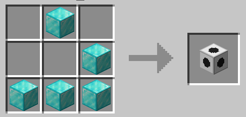
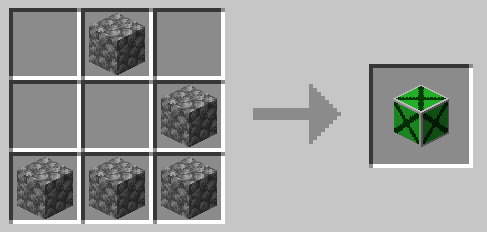
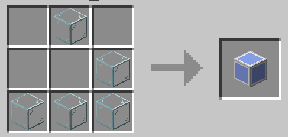
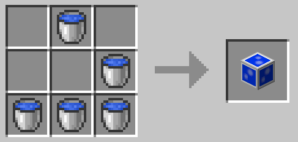
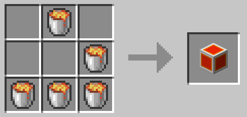
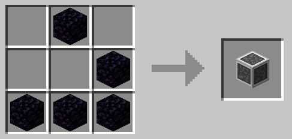
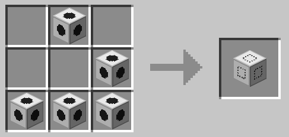

AutomataCraft
A minecraft mod that adds a block that replaces a 3x3x3 block pattern with another blocks.
The block is programmable with other blocks by giving two patterns, match blocks and result blocks.
This mod adds:
- An automata block 
- A termination block 
- An air placeholder block 
- A water placeholder block 
- A lava placeholder block 
- A bedrock placeholder block 
- An automata placeholder block 
To use it add a start block, a 3x3 block construction for the result blocks, another 3x3 block construction for the pattern match blocks and another terminator and the automata block.
After creating the pattern, place the automata block. The patterns will be loaded and the automata block will change from black to red.
Empty blocks (air) matches any block type.
Instalation
First install Forge
Then Download the mod and copy the jar inside %appdata%/.minecraft/mods
How to play:
Suppose you want to create an automata that replaces all blocks with dirt.
You could do this:

First column has the start block. Anything around it is not taken into consideration.
The next 3x3x3 blocks are the replacement blocks. This tells the automata that when the pattern matches, this blocks should replace wathever blocks are around the automata position
The next 3x3x3 blocks are the pattern to replace. Empty (air) is a special case that matches any lock. It means that when comparing the blocks around the automata with the pattern, it will always match.
The center block is ignored because it will always be the automata block.
Then a terminator block.
After creating this block pattern, if an automata block is placed anywhere in a 20x20 radius from this pattern, it will load it and start executing.
Automata blocks replication
Digger
The air placeholder ,when used on the replacement section, will replace blocks with air. The automata placeholder will create another automata and replicate the pattern. The new automata will repeat the pattern and this will keep going until it hits bedrock. Bedrock is not replaced by the automata so the digger stops.
More matchers
More matchers are allowed, just add more 9x3x3 sequences and then the terminator.
Closer to the start block patterns have higher priority in case of ambiguity.
Videos:
- Installation: todo
- Simple block multiplier: todo
- Digger: todo
- Stairway down: todo
- Expanding digger: todo
- Tick clock: todo
- Lava door that opens with redstone lever: todo
- Maze solver: todo
- Sort blocks: todo
Planned
- Implement server/client separation
- Limit block total count to avoid crashing the game
- Not air block
- Y axis block, when added to the center of the match pattern, pattern will match in any axis rotetion
- Z axis block, when added to the center of the match pattern, pattern will match in any axis rotetion
- Not block, when added to the center of the match pattern, pattern will match any pattern that is not the current pattern